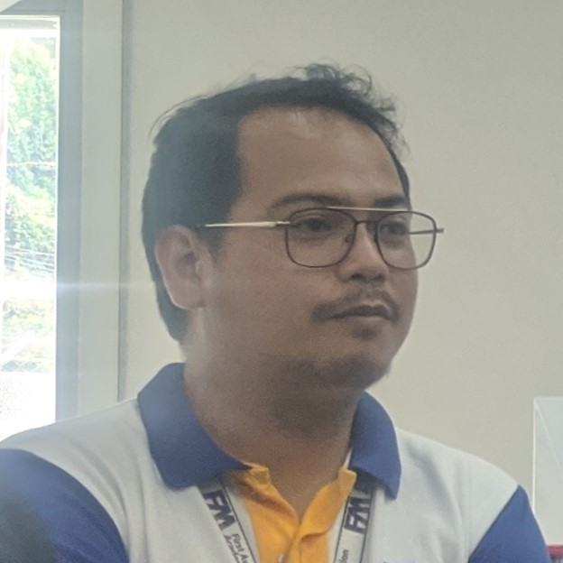
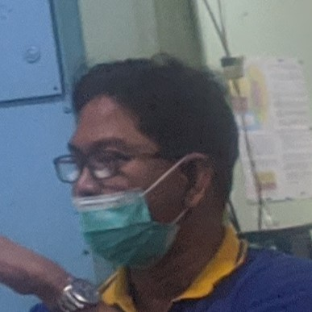
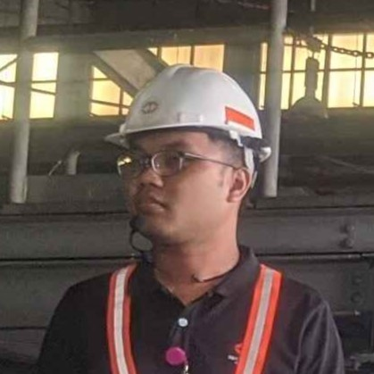
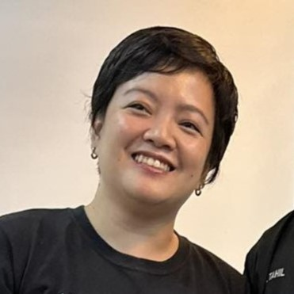
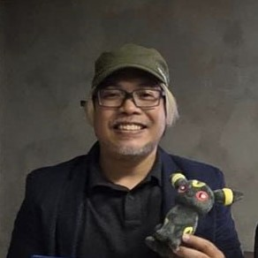
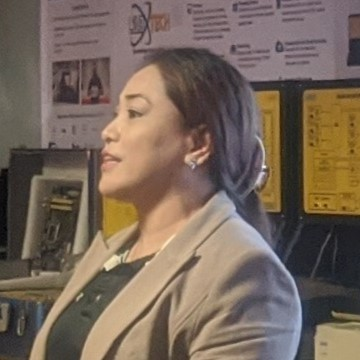
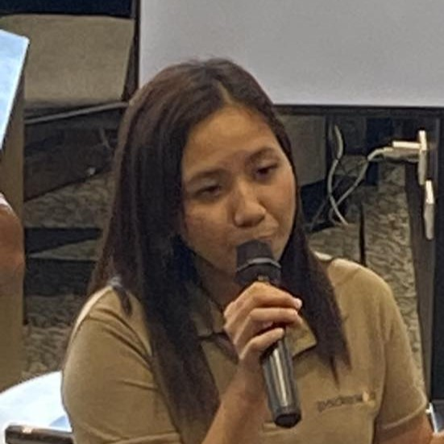
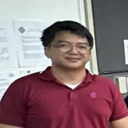

We are honored to introduce our inspirational and hardworking speakers,
whose dedication and wisdom have left an indelible mark on their respective fields.
Their stories and insights promise to motivate and enlighten us all. Our distinguished panel of speakers featured:

Dave Del Rosario
Facilitator
FAA
Mr. Del Rosario as one of the facilitators began the tour at the FAA with a comprehensive
overview of the FAA's mission and operations. He explained how the organization ensures
the safety and efficiency of air travel. We were taken through various sections of the
facility, including the training simulator room, the research and development department and
the airfield.

Arnel Gonzales
Facilitator
PAGASA
Mr. Gonzales enlighten presentation provided us with an in-depth understanding of the vital
role PAGASA plays in weather forecasting and monitoring. He detailed how PAGASA's efforts are crucial
for ensuring public safety and supporting various sectors such as agriculture, aviation, and
disaster management. The presentation not only to highlighted the technical aspects of PAGASA's work
but also emphasize the organization's commitment to using science and technology to safeguard lives
and property.

Adrian Francisco Saldana
PUBLIC RELATIONS OFFICER
LRTA
In managing one of the largest transportation systems in the Philippines, Mr. Saldana delves into the intricate challenges involved in maintaining secure and efficient public
transportation systems. He explains how a broad range of modern technology is utilized to monitor and
manage the entire operation. His discussion underscores the
complexity and dedication required to maintain a reliable public transportation network, emphasizing how
technology and human oversight work together to provide a safe and seamless experience for passengers.

Karla Legaspi
HEAD
QBO Innovation Hub
We have the privilege of meeting Ms. Legaspi. one of the head of QBO innovation Hub, an exciting new
start-up dedicated to fostering innovation and entrepreneurship in the Philippines. Their passion for technology
and community development shone through as she shared the background and prupose of their venture. She began the
presentation with the story of QBO Innovation Hub inception. With a background in engineering and a deep interest
in start-up ecosystems.

Brian Tan Seng
CEO
98 LABS
We had the honor of meeting Brian Tan Seng, the CEO and co-founder of 98 LABS, a pioneer software
engineering company making waves in the tech industry. Mr. Seng's remarkable journey and experience
was truly inspiring as he introduced us to the background and purpose of 98 Labs. One of the key
highlights of Mr. Seng's presentation was his description of the diverse range of projects 98 Labs
undertaken. From developing scalable web applications to creating robust mobile solutions, the company
has proven track record of delivering high-quality software across various industries.

Danielle Avanzado
HEAD
Hytech Power Inc.
When it comes to building innovative software and hardware components, we had the pleasure
of meeting Ms. Danielle Avanzado, the head of Hytech Power Inc., a dynamic retail dedicated to
providing innovative solutions to industrial companies and educational institutions. Ms. Avanzado's
journey with Hytech Power Inc. is a testament to her leadership and vision. Through her perseverance
and strategic thinking, Hytech Power Inc. has grown to become a reputable name in both the industrial and
educational sectors. Her passion for innovation and her dedication to helping
partners navigate the IoT landscape were truly inspiring

Rose Anne Caraan
STAFF
Packetworx
One of the key highlights of Ms. Caraan's presentation was her overview of the diverse applications
of Packetworx's IoT solutions. From smart city initiatives and industrial automation to environmental
monitoring and healthcare, Packetworx's devices are versatile and adaptable to various needs. She also
discussed their commitment to sustainability, noting how their low-power devices contribute to energy
efficiency and reduced environmental impact.

Engr. Jerome D. Saddi
HEAD
Vessel Traffic Management System
Engr. Saddi emphasized the importance of VTMS in enhancing maritime security and
environmental protection. By detecting and responding to potential risks early, VTMS plays a
critical role in minimizing accidents, protecting marine ecosystems, and safeguarding coastal communities.
Berna Romulo Puyat
Facilitator
National Museum of the Philippines
During our recent visit to the National Museum of the Philippines,
we had the pleasure of being guided by Berna Romulo Puyat, a distinguished facilitator
whose deep knowledge and passion for art and history made our experience truly memorable.
Ms. Puyat introduced us to the rich historical backgrounds of the paintings and
sculptures on display, providing us with a deeper appreciation for the cultural heritage of
the Philippines.